Numerical integration over meshes
This demo introduces how the toolbox NIHU can be used to perform numerical integration over boundary meshes.
Contents
In the next example, the indicator function
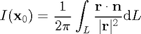
is computed, where
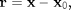
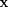 is the boundary integration point, and 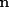 is the outward surface normal. The value of the integral is 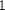 if 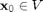 and otherwise.
circ = get_boundary(create_circle(1, 10)); % create circle boundary circ = drop_unused_nodes(circ); [xg, ng, w] = geo2gauss(circ, 3); % Gaussian quadrature xy = rand(1000,2)*2-1; xy(:,3) = 0; I = zeros(size(xy,1),1); for iX = 1 : size(xy,1) rvec = xg - repmat(xy(iX,:), size(xg,1),1); % distance vector r = sqrt(dot(rvec, rvec, 2)); % scalar distance f = dot(rvec, ng, 2)./r.^2; % integrand samples I(iX) = (w' * f)/(2*pi); % integration end % plot indicator function inside = find(abs(I-1) < 1e-2); outside = find(abs(I-1) >= 1e-2); figure; hold on; plot3(xy(inside,1), xy(inside,2), xy(inside,3), 'r.'); plot3(xy(outside,1), xy(outside,2), xy(outside,3), 'b.'); plot_mesh(circ); hold off;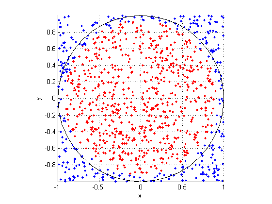
Compute the surface area of a mesh
The surface area 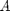 of a mesh can be computed by integrating the function 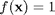 over the surface 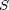:

In the present example, a sphere mesh is created and its surface area is computed by Gaussian quadrature. As the integrand is a 0-th order polynomial, a one-point Gaussian quadrature scheme is computed for each element of the surface using the toolbox function geo2gauss, and the obtained Gaussian weights are summed:
sphere = create_sphere_boundary(1, 10); % create sphere mesh [xg, ng, w] = geo2gauss(sphere, 0); % Gaussian quadrature over the mesh A = sum(w) % mesh surface area
A = 12.5473
Integrate analytically given scalar field over a mesh surface
In the next example, the integral
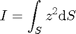
is computed over the sphere surface.
[xg, ng, w] = geo2gauss(sphere, 3); % Higher order quadrature f = xg(:,3).^2; % the function samples in the quadrature points I = w' * f % integration
I =
4.1740
Integrate analytically given vector field over a mesh surface
In the flollowing example, the vector field
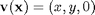
is integrated over the upper unit hemisphere:
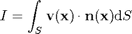
The analytical value of the integral is 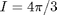.
sphere = create_sphere_boundary(1, 10); % create sphere mesh sphere = mesh_section(sphere, [-Inf, -Inf, -1e-3;Inf, Inf, Inf]); [xg, ng, w] = geo2gauss(sphere, 0); % 1-point Gaussian quadrature v = zeros(size(xg)); % vector field in the Gaussian base points v(:,1:2) = xg(:,1:2); I = w.' * dot(v, ng, 2) % integration I0 = 4/3*pi; % analytical solution error = abs(I-I0)/I0 % relative error
I =
4.1761
error =
0.0030
In the next example, the indicator function
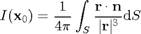
is computed, where
is the surface integration point, and is the outward surface normal. The value of the integral is if and otherwise.
sphere = create_sphere_boundary(1, 10); % create sphere mesh [xg, ng, w] = geo2gauss(sphere, 3); % Gaussian quadrature xvec = linspace(0, 2, 101); % x_0 samples I = linspace(0, 2, 101); % preallocate integral values for iX = 1 : length(xvec) x0 = [xvec(iX) 0 0]; % reference location rvec = xg - repmat(x0, size(xg,1),1); % distance vector r = sqrt(dot(rvec, rvec, 2)); % scalar distance f = dot(rvec, ng, 2)./r.^3; % integrand samples I(iX) = (w' * f)/(4*pi); % integration end % plot indicator function figure; plot(xvec, I); xlabel('x'); ylabel('I(x)');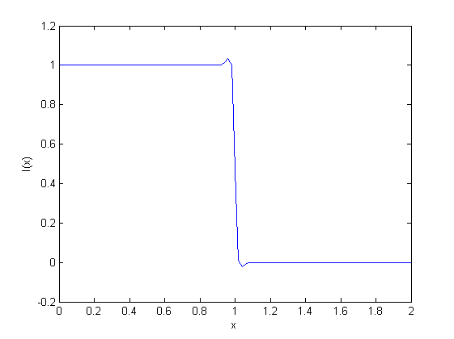